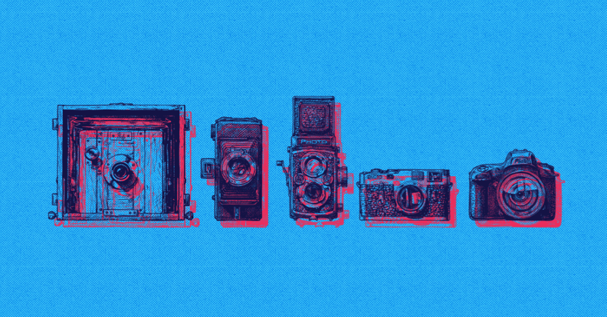

fotografia
Chamamos de Fotografia as técnicas de captação, criação ou registro de imagens feitas mediante exposição luminosa em superfície sensível. A primeira fotografia de que se tem registro foi tirada na França, em 1826, por Joseph Nicéphore Niépce. Entretanto, há quem afirme que sua história teve início muitos séculos antes desse registro, com as experiências feitas por alquimistas na Antiguidade. Já a primeira câmera fotográfica surgiu em 1839, também criada por um francês, Louis Jacques Mandé Daguerre. Mas foi apenas por volta de 1888 que a nova arte ganhou popularidade, com o surgimento da marca Kodak — que atua no ramo da fotografia até os dias atuais. A Kodak foi criada pelo inventor do filme fotográfico, George Estman, que revolucionou a fotografia ao desenvolver uma máquina que podia ser transportada.

Evolução da Fotografia
Muitos foram os pioneiros que pesquisaram como fixar uma imagem no papel. "Tirar fotografia", "fazer um retrato" tornou-se moda entre todas as classes sociais na segunda metade do século XIX. A primeira fotografia propriamente dita foi obra do francês Joseph Niépce (1763-1828). Ele estudava as propriedades do cloreto de prata sobre papel desde 1817 e obteve sua grande obra no verão de 1826. Daguerreótipo Por sua vez, outro francês, Louis Jaques Mandé Daguerre (1789-1851), desenvolveu este sistema. Alguns anos depois, criou o aparelho que leva seu nome, o “daguerreótipo”, que era capaz de gravar imagens permanentes.